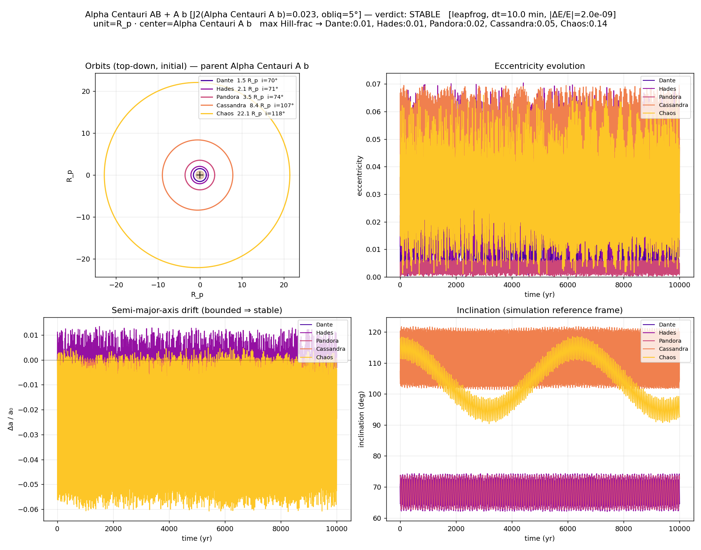
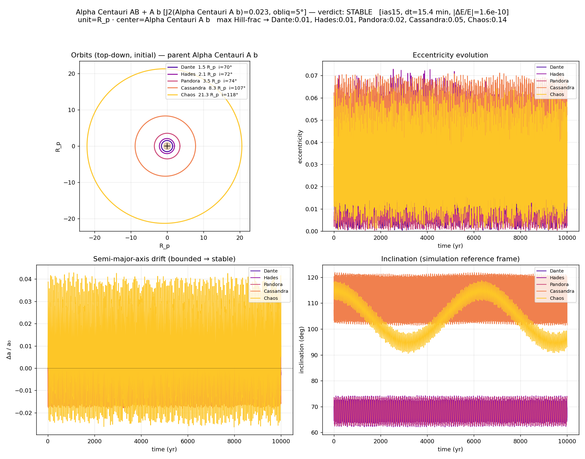
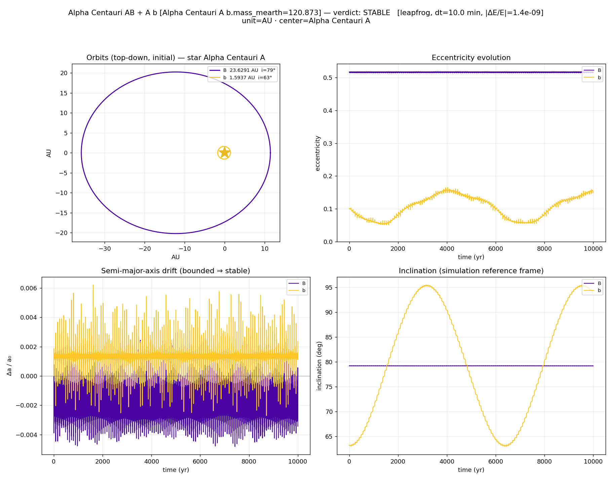
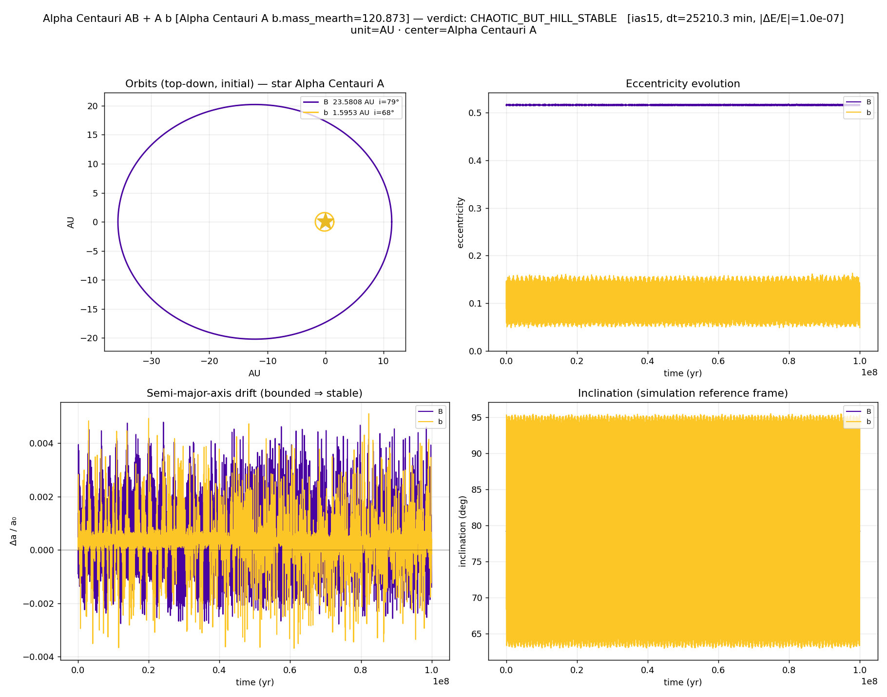

<!-- α Cen 궤도 안정성 검증 매트릭스 (Phase 4 자료). 수동 작성 — 4검사 요약. -->
<!doctype html><meta charset="utf-8"><title>Alpha Centauri — orbit stability validation</title>
<style>
  body{margin:0;background:#0a0c12;color:#cdd6e6;font:14px/1.65 system-ui,sans-serif}
  header{padding:20px 24px;border-bottom:1px solid #1c2436}
  h1{margin:0;font-size:19px} .lead{color:#8a94a8;font-size:13px;margin-top:6px;max-width:80ch}
  main{padding:22px;max-width:1100px}
  table.matrix{border-collapse:collapse;margin:6px 0 22px}
  table.matrix th,table.matrix td{border:1px solid #1c2436;padding:9px 13px;text-align:left;vertical-align:top}
  table.matrix th{background:#11141d;font-size:12px;color:#8a94a8}
  .v-ok{color:#8fe3a0;font-weight:600} .v-warn{color:#e8c561;font-weight:600}
  .mono{font-family:ui-monospace,monospace;font-size:12px}
  .grid{display:grid;grid-template-columns:repeat(auto-fill,minmax(340px,1fr));gap:16px}
  .card{background:#11141d;border:1px solid #1c2436;border-radius:10px;overflow:hidden}
  .card img{width:100%;display:block;background:#06070d}
  .card .m{padding:11px 13px} .card h3{margin:0 0 4px;font-size:14px}
  .card .sub{color:#8a94a8;font-size:12px} .card a{color:#7fb0ff;text-decoration:none;font-size:12px}
  .card a:hover{text-decoration:underline}
  h2{font-size:15px;margin:26px 0 10px;border-top:1px solid #1c2436;padding-top:18px}
  .note{color:#8a94a8;font-size:12.5px;max-width:80ch}
  .seg{float:right}.seg button{background:#1c2740;color:#cdd6e6;border:1px solid #2c3a5a;border-radius:6px;padding:4px 10px;cursor:pointer}
  .seg button.on{background:#2b60b0}
</style>
<header>
  <div class="seg"><button id="ko" class="on">한국어</button><button id="en">EN</button></div>
  <h1>Alpha Centauri A b (Polyphemus) — <span data-i18n>궤도 안정성 검증</span><span data-en hidden>orbit stability validation</span></h1>
  <div class="lead"><span data-i18n>위성계와 행성계를 각각 두 방식으로 교차 검증했습니다. leapfrog(고정 10분 스텝)는 Principia 인게임 적분기와 정합하고, IAS15+MEGNO는 결정론적 카오스를 판정합니다(MEGNO≈2 정칙, &gt;5 카오스).</span><span data-en hidden>Both the moon system and the planet orbit are cross-checked two ways. Leapfrog (fixed 10-min step) matches Principia's in-game integrator; IAS15+MEGNO diagnoses deterministic chaos (MEGNO≈2 regular, &gt;5 chaotic).</span></div>
</header>
<main>
  <table class="matrix">
    <tr><th></th>
      <th>leapfrog · <span data-i18n>인게임 정합</span><span data-en hidden>in-game fidelity</span></th>
      <th>IAS15 + MEGNO · <span data-i18n>카오스 판정</span><span data-en hidden>chaos diagnosis</span></th></tr>
    <tr><th><span data-i18n>위성계</span><span data-en hidden>Moon system</span><br><span class="mono">5 moons</span></th>
      <td><span class="v-ok">STABLE</span><br><span class="mono">10⁴ yr · \|ΔE/E\|=2.0e-9</span></td>
      <td><span class="v-ok">STABLE</span><br><span class="mono">10⁴ yr · MEGNO 3.65</span><br><span class="note" data-i18n>거의 정칙 — 위성 5개 전부 Hill-bound</span><span class="note" data-en hidden>near-regular — all 5 moons Hill-bound</span></td></tr>
    <tr><th><span data-i18n>행성계</span><span data-en hidden>Planet orbit</span><br><span class="mono">A b + comp. B</span></th>
      <td><span class="v-ok">STABLE</span><br><span class="mono">10⁴ yr · \|ΔE/E\|=1.4e-9</span></td>
      <td><span class="v-warn">CHAOTIC · HILL-STABLE</span><br><span class="mono">10⁸ yr · MEGNO 47.3 · t<sub>Lyap</sub>≈4.4 Myr</span><br><span class="note" data-i18n>카오스지만 a·e 봉투 유계 (동반성 B 강섭동)</span><span class="note" data-en hidden>chaotic but a·e envelope bounded (strong companion-B forcing)</span></td></tr>
  </table>

  <p class="note"><span data-i18n><b>요점.</b> 플레이어가 실제 머무는 위성계는 거의 정칙(MEGNO 3.65)으로 안정적이고, 바깥 행성 궤도만 장기적으로 결정론적 카오스입니다 — 단 궤도 범위(장반축·이심률)는 1억 년 내내 유계라 이탈하지 않습니다. 두 방식이 상보적으로 "게임 시간대엔 안정, 장기엔 카오스지만 발산 없음"을 뒷받침합니다.</span><span data-en hidden><b>Bottom line.</b> The moon system the player actually inhabits is near-regular (MEGNO 3.65) and stable; only the outer planet orbit is deterministically chaotic on long timescales — yet its orbital envelope (a, e) stays bounded across 100 Myr, so it never escapes. The two methods jointly support "stable over the play window, chaotic-but-non-divergent over the long term."</span></p>

  <h2><span data-i18n>위성계</span><span data-en hidden>Moon system</span></h2>
  <div class="grid">
    <div class="card"><a href="moon_leapfrog.html"></a>
      <div class="m"><h3>leapfrog · 10⁴ yr</h3><div class="sub"><span data-i18n>인게임 정합 · STABLE</span><span data-en hidden>in-game fidelity · STABLE</span> · <a href="moon_leapfrog.html"><span data-i18n>인터랙티브</span><span data-en hidden>interactive</span></a></div></div></div>
    <div class="card"><a href="moon_megno.html"></a>
      <div class="m"><h3>IAS15+MEGNO · 10⁴ yr</h3><div class="sub">MEGNO 3.65 · <a href="moon_megno.html"><span data-i18n>인터랙티브</span><span data-en hidden>interactive</span></a></div></div></div>
  </div>

  <h2><span data-i18n>행성계</span><span data-en hidden>Planet orbit</span></h2>
  <div class="grid">
    <div class="card"><a href="planets_leapfrog.html"></a>
      <div class="m"><h3>leapfrog · 10⁴ yr</h3><div class="sub"><span data-i18n>인게임 정합 · STABLE</span><span data-en hidden>in-game fidelity · STABLE</span> · <a href="planets_leapfrog.html"><span data-i18n>인터랙티브</span><span data-en hidden>interactive</span></a></div></div></div>
    <div class="card"><a href="planets_megno.html"></a>
      <div class="m"><h3>IAS15+MEGNO · 10⁸ yr</h3><div class="sub">MEGNO 47.3 · CHAOTIC-HILL-STABLE · <a href="planets_megno.html"><span data-i18n>인터랙티브</span><span data-en hidden>interactive</span></a></div></div></div>
  </div>

  <p class="note" style="margin-top:20px"><span data-i18n>주: 행성계 런은 위성 질량(0.87 M⊕)을 행성 b에 합산해 위성을 제거하고 돌렸습니다(빠른 내위성 스텝 회피 — 표준 관행). 위성계 IAS15 10⁸ 년은 내위성 주기(0.38일)에 스텝이 묶여 ~수백 일 걸리므로 비현실적이라, 위성계는 궤도 수로 대등한 10⁴ 년으로 판정했습니다.</span><span data-en hidden>Note: the planet-orbit runs fold the moon mass (0.87 M⊕) into planet b and drop the moons (avoids the fast inner-moon step — standard practice). A 10⁸-yr IAS15 moon run is infeasible (~hundreds of days, step bound by the 0.38-day inner moon), so the moon system is judged at 10⁴ yr — comparable in orbit count.</span></p>
</main>
<script>
const ko=document.getElementById('ko'),en=document.getElementById('en');
function set(e){document.querySelectorAll('[data-i18n]').forEach(x=>x.hidden=e);document.querySelectorAll('[data-en]').forEach(x=>x.hidden=!e);ko.classList.toggle('on',!e);en.classList.toggle('on',e);}
ko.onclick=()=>set(false);en.onclick=()=>set(true);
</script>
